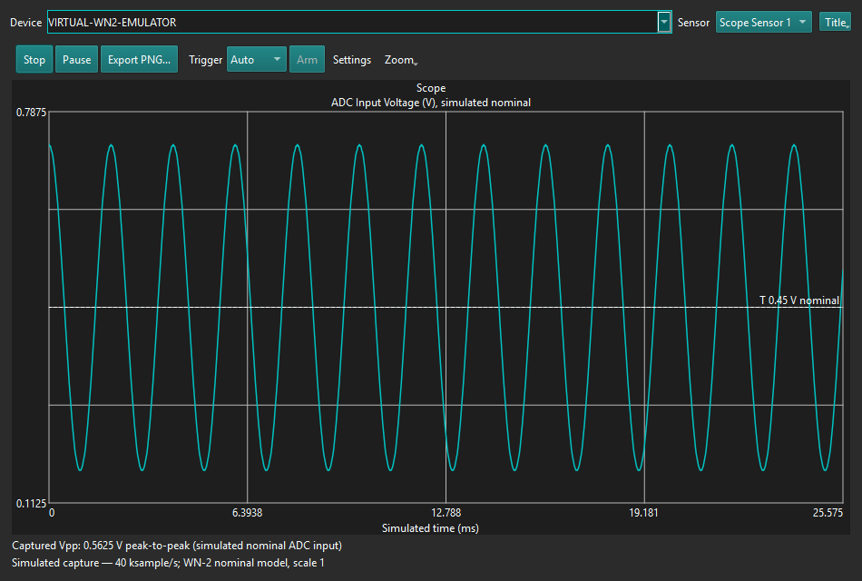

Scope, Mini-Scope and capture lifecycle
On this page
Open and start Scope
Choose Capture → Scope. Select your WN-2 and the required Scope Sensor, then press Start. Wait for a waveform to arrive. Scope shows a captured RF envelope, not the radio-frequency carrier itself.

Scope demonstration using a simulated 500 Hz envelope from the WN-2 emulator; no RF transmission. Select image to enlarge.

Stop, Pause and Resume
Pause freezes the displayed waveform so you can inspect it. It does not mean the transmitter stopped. Resume returns to updates. Stop releases this viewer's capture request. If another view still uses the same device capture, it can remain active. Capture → Stop selected device capture stops capture for the WN-2 selected in the main toolbar.
Trigger and Settings
Trigger settings decide when a waveform is held. Auto is a convenient starting point. Other trigger choices let you wait for a chosen waveform condition; use Arm when the selected mode requires it. The trigger reference line helps show the selected level. Open Settings to choose time/voltage presentation, digital scale and vertical range. Start with Auto Scale Y to fit the waveform. Read Time, voltage and clipping before changing digital scale to diagnose flattened peaks.
Inspect the waveform
Use the Zoom controls for a closer view. Reset Zoom returns to the broader view. Paused or stopped captures remain historical; check the status before treating a displayed trace as current RF. Title changes the plot title. Export PNG saves the visible plot for your records. See Plot titles and images.
Mini-Scope
Add Mini-Scope to a layout when you want a small waveform beside the meters. Select its device/sensor in Properties and operate its capture controls in normal layout mode. The main Scope provides a larger view and more analysis controls.
Practice without transmitting
Open the WN-2 Raw Data Emulator, connect its identity in the main device list, and enable its Scope source. Set the envelope frequency to 500 Hz. Select that same emulator in this viewer and press Start. The illustration uses the nominal 40 ksample/s model. Simulated captures are identified on the axes and status line.
Help home · RF StateSide · RayWn2App operator guide